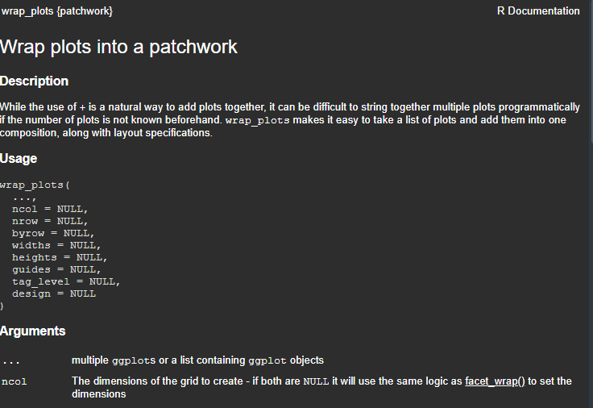

3 arrange list of plots
目前 ggplot 绘图系统主要使用的可用于拼图的包有： patchwork， cowplot 等，至于 gridExtra, aplot 我们暂且不谈。
至于具体的入门教程，很显然 patchwork 包的 主页上提供的 Vignettes: Getting started 中已经给出了通俗易懂的方法：使用 “+” 的语法，将 多个 ggplot2 对象进行拼接操作。
除此以外，cowplot 的 Vignettes: Introduction to cowplot 也给出了 plot_grid() 的简单使用方法。
但以上的内容都是针对多个 ggplot2 对象进行操作，事实上，还有另一种情况：列表中包含多个 ggplot2 的对象，这往往主要是采用 for 循环一类批量绘图得到的列表对象，或者是将获得的十余个或几十个变量保存到一个列表中。
其关键在于：列表中的各个元素均为 ggplot2 对象。
这里，我们以 women 数据集为例，汇总散点图和折线图为例，将其保存为变量 p1, 接着重复生成其余7个变量：p2 到 p8
library(ggplot2)
p1 <- ggplot(women,aes(height,weight)) +
geom_line() + geom_point()
p8 <- p7 <- p6 <- p5 <- p4 <- p3 <- p2 <- p1接着用 patchwork 进行拼图：
library(patchwork)
paste0('p',1:8, collapse = ' + ') -> a
a## [1] "p1 + p2 + p3 + p4 + p5 + p6 + p7 + p8"eval(parse(text = a)) + plot_layout(nrow = 2) 变量 a 为字符串格式，采用 paste0() 生成p1到p8 之间以 “+” 相连的字符串，接着使用
变量 a 为字符串格式，采用 paste0() 生成p1到p8 之间以 “+” 相连的字符串，接着使用 eval(parse(text =a))将其运行并在末尾继续使用 “+”语法添加 plot_layout() 语句。
这种方式仅仅局限于如： 许多个变量时的情况，对于列表里的元素操作就不建议如此操作。并且，一次性生成的众多的 ggplot2 对象，大多数情况下变量名都是具有规律性的。而对于混乱且没有统一性的变量名，还是建议老老实实地手动写完进行拼图。
3.1 list
事实上，cowplot 与 patchwork 本身已经支持了 对于list 中众多 ggplot2 对象拼图的语法支持，只是因为大多数自媒体的宣传，且大部分的教程都是完全相同的框架，与 cowplot, patchwork 的 Vignettes 中的内容并无太大区别，都是限于多个对象时的拼图。这很容易让初学者忽略掉包里的其他函数和主函数的重要参数。
解决问题的重要途径是：读文档！
以 patchwork 为例，阅读文档后，便会注意到：wrap_plots() 函数：

wrap_plots() 函数支持将 list 对象用于拼图，至于使用的方法可以参考该函数的示例部分：
example("wrap_plots")在这里，针对已有的p1 到 p8 的变量，将其保存到列表中，并用wrap_plots() 进行拼图：
p1 <- ggplot(women,aes(height,weight)) +
geom_line() + geom_point()
p8 <- p7 <- p6 <- p5 <- p4 <- p3 <- p2 <- p1
b <- list(p1,p2,p3,p4,p5,p6,p7,p8)
library(patchwork)
wrap_plots(b)但很多人会有疑问，如何批量将多个变量保存到列表中？
很显然，上面的手动生成列表的方式，对于几十个元素而言，并不高效。对于这个问题，之后的相关章节中会进一步展开讨论。这里暂不叙述。
3.2 plotlist-cowplot
对于 cowplot 包，其主函数plot_grid() 的第二个参数就尤为重要。
...,
plotlist = NULL,
...)plot_grid() 的第二个参数 plotlist 接收list对象，用以拼图。但这个函数并不等同于 patchwork 包中的 wrap_plots() 函数的第一个参数可以同时接收多个对象或者是一个列表对象。因此，需要引起格外重视。
p1 <- ggplot(women,aes(height,weight)) +
geom_line() + geom_point()
p8 <- p7 <- p6 <- p5 <- p4 <- p3 <- p2 <- p1
b <- list(p1,p2,p3,p4,p5,p6,p7,p8)
cowplot::plot_grid(plotlist = b)